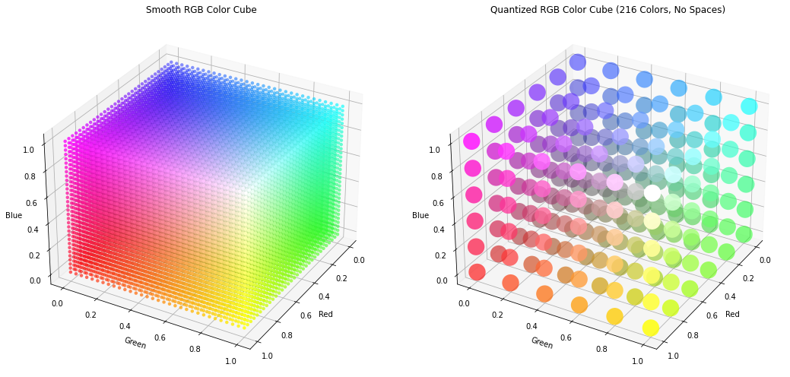
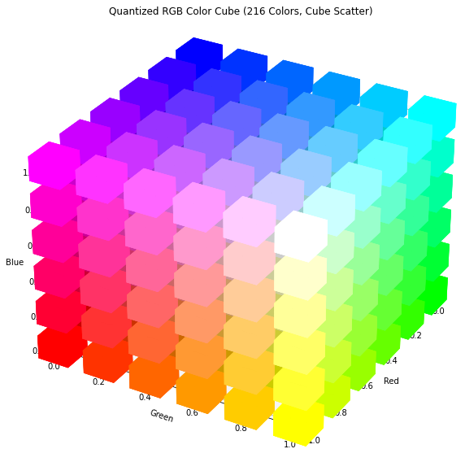
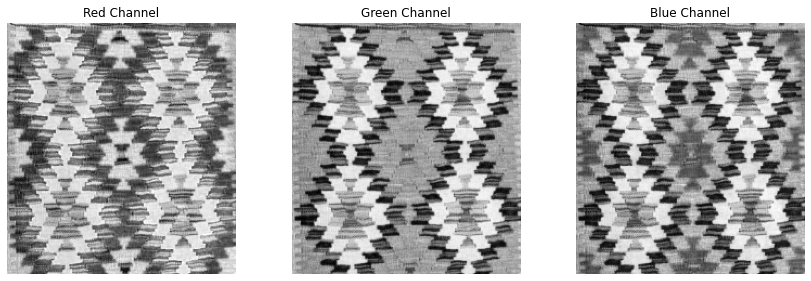
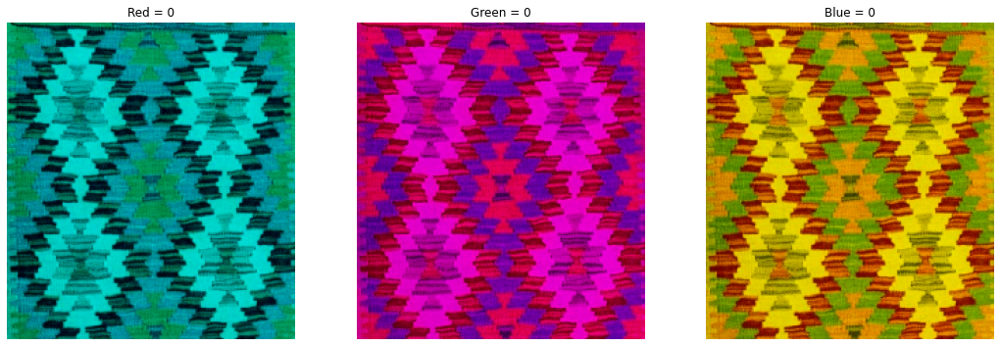
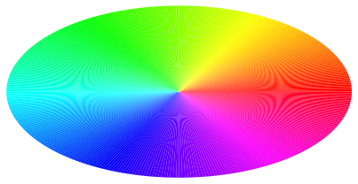
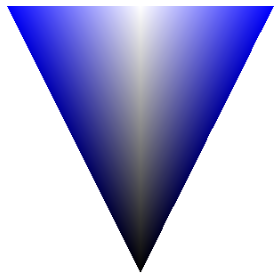
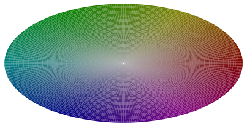
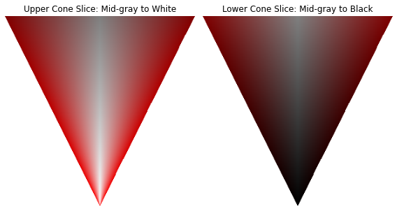

Chapter 4: Color Image Processing#
This is the companion file for Chapter 4.
Video 4.1: The Physics and Psychology of Color#

Video: The Physics and Psychology of Colour - Andrew Hanson.
Video 4.2: What is Color?#

Video: “What is color?” from Khan Academy.
Video 4.3: Color Spectrum?#

Video: Color Spectrum.
Video 4.4: How does the brain generate color?#

Video: How does the brain generate color?
Programming exercise 4.1:#
Run the following code to see red, green, and blue channel representations of the sample image.
Observe the effect of adding (and subtracting) and image to (from) itself after a slight shift.
# Import necessary libraries for image processing and visualization
from skimage import io, color
import matplotlib.pyplot as plt
import numpy as np
# Download the image from the specified URL
!wget -cq https://raw.githubusercontent.com/hazalmogultay/466Images/master/W9/odtu.jpg
# Read the downloaded image using skimage's io module
img1 = io.imread("odtu.jpg")
# Create a blank image of the same shape as img1, filled with white (255)
img2 = 255 * np.ones((img1.shape[0], img1.shape[1], img1.shape[2])).astype('int')
# Place img1 shifted by 20 pixels down and to the right into img2, leaving a border
img2[0:-20, 0:-20, :] = img1[20:, 20:, :]
# Visualize different channels of an image
plt.figure(figsize=(16, 6))
# Display the original RGB image
plt.subplot(141)
plt.imshow(img1)
plt.title('RGB Image')
plt.axis('off')
# Display the Red channel of the image
plt.subplot(142)
plt.imshow(img1[:, :, 0], cmap='gray')
plt.title('Red Channel')
plt.axis('off')
# Display the Green channel of the image
plt.subplot(143)
plt.imshow(img1[:, :, 1], cmap='gray')
plt.title('Green Channel')
plt.axis('off')
# Display the Blue channel of the image
plt.subplot(144)
plt.imshow(img1[:, :, 2], cmap='gray')
plt.title('Blue Channel')
plt.axis('off')
# Create a new figure for image addition and subtraction
plt.figure(figsize=(8, 6))
# Image addition: combine img1 and img2
img3 = img1.astype(float) + img2.astype(float)
# Normalize the result to the range [0, 1]
img3 = (img3 - img3.min()) / (img3.max() - img3.min())
# Display the result of image addition
plt.subplot(1, 2, 1)
plt.imshow((img3 * 255).astype(np.uint8)) # Convert back to uint8 for display
plt.title('Image Addition')
plt.axis('off')
# Image subtraction: subtract img2 from img1
img3 = img1.astype(float) - img2.astype(float)
# Normalize the result to the range [0, 1]
img3 = (img3 - img3.min()) / (img3.max() - img3.min())
# Display the result of image subtraction
plt.subplot(1, 2, 2)
plt.imshow(img3)
plt.title('Image Subtraction')
plt.axis('off')
(-0.5, 1426.5, 738.5, -0.5)
Programming exercise 4.2:#
Run the following code to see hue, saturation, and intensity channels of the sample image.
# Convert RGB image to HSI image and visualize hue, saturation, intensity channels
from skimage import io, color
import matplotlib.pyplot as plt
import numpy as np
!wget -cq https://raw.githubusercontent.com/hazalmogultay/466Images/master/W9/odtu.jpg
img1 = io.imread("odtu.jpg")
img_hsi = color.rgb2hsv(img1)
plt.figure(figsize=(20,8))
plt.subplot(151)
plt.imshow(img1)
plt.title('RGB Image');
plt.axis('off');
plt.subplot(152)
plt.imshow(img_hsi)
plt.title('HSI Image');
plt.axis('off');
plt.subplot(153)
plt.imshow(img_hsi[:,:,0],cmap='gray');
plt.title('Hue Channel');
plt.axis('off');
plt.subplot(154)
plt.imshow(img_hsi[:,:,1],cmap='gray');
plt.title('Saturation Channel');
plt.axis('off');
plt.subplot(155)
plt.imshow(img_hsi[:,:,2],cmap='gray');
plt.title('Intensity Channel');
plt.axis('off');
import numpy as np
import matplotlib.pyplot as plt
from mpl_toolkits.mplot3d import Axes3D
# Function to generate a smooth RGB color cube
def generate_color_cube(size=32):
r, g, b = np.meshgrid(
np.linspace(0, 1, size),
np.linspace(0, 1, size),
np.linspace(0, 1, size),
indexing="ij"
)
return r, g, b
# Function to generate a quantized RGB color cube (216 colors)
def generate_quantized_color_cube():
values = np.linspace(0, 1, 6) # 6 levels for each channel (0, 51, 102, ..., 255 normalized to 0-1)
r, g, b = np.meshgrid(values, values, values, indexing="ij")
return r, g, b
# Generate smooth RGB color cube
size = 32
r_smooth, g_smooth, b_smooth = generate_color_cube(size)
# Generate quantized RGB color cube
r_quantized, g_quantized, b_quantized = generate_quantized_color_cube()
# Flatten the smooth color cube for visualization
colors_smooth = np.stack((r_smooth.flatten(), g_smooth.flatten(), b_smooth.flatten()), axis=-1)
x_smooth, y_smooth, z_smooth = r_smooth.flatten(), g_smooth.flatten(), b_smooth.flatten()
# Flatten the quantized color cube for visualization
colors_quantized = np.stack((r_quantized.flatten(), g_quantized.flatten(), b_quantized.flatten()), axis=-1)
x_quantized, y_quantized, z_quantized = r_quantized.flatten(), g_quantized.flatten(), b_quantized.flatten()
# Plot the smooth RGB color cube
fig = plt.figure(figsize=(15, 7))
ax1 = fig.add_subplot(121, projection='3d')
# Smooth cube scatter
ax1.scatter(x_smooth, y_smooth, z_smooth, c=colors_smooth, marker='o', s=20, edgecolor='none')
ax1.set_xlabel('Red')
ax1.set_ylabel('Green')
ax1.set_zlabel('Blue')
ax1.set_title('Smooth RGB Color Cube')
ax1.view_init(elev=30, azim=30) # Tilted view
# Plot the quantized RGB color cube
ax2 = fig.add_subplot(122, projection='3d')
# Increase scatter size to remove spaces
ax2.scatter(x_quantized, y_quantized, z_quantized, c=colors_quantized, marker='o', s=500, edgecolor='none') # Increased size
ax2.set_xlabel('Red')
ax2.set_ylabel('Green')
ax2.set_zlabel('Blue')
ax2.set_title('Quantized RGB Color Cube (216 Colors, No Spaces)')
ax2.view_init(elev=30, azim=30) # Tilted view
plt.tight_layout()
plt.show()

import numpy as np
import matplotlib.pyplot as plt
from mpl_toolkits.mplot3d.art3d import Poly3DCollection
# Function to generate quantized RGB color cube (216 colors)
def generate_quantized_color_cube():
values = np.linspace(0, 1, 6) # 6 levels for each channel (0, 51, 102, ..., 255 normalized to 0-1)
r, g, b = np.meshgrid(values, values, values, indexing="ij")
return r.flatten(), g.flatten(), b.flatten()
# Generate quantized RGB color cube
x, y, z = generate_quantized_color_cube()
colors = np.stack((x, y, z), axis=-1)
# Function to add cubes to the 3D plot
def add_cubes(ax, x, y, z, size, color):
half_size = size / 2
# Define the 8 vertices of a cube
for xi, yi, zi, ci in zip(x, y, z, color):
vertices = [
[xi - half_size, yi - half_size, zi - half_size],
[xi + half_size, yi - half_size, zi - half_size],
[xi + half_size, yi + half_size, zi - half_size],
[xi - half_size, yi + half_size, zi - half_size],
[xi - half_size, yi - half_size, zi + half_size],
[xi + half_size, yi - half_size, zi + half_size],
[xi + half_size, yi + half_size, zi + half_size],
[xi - half_size, yi + half_size, zi + half_size]
]
# Define the 6 faces of the cube using the 8 vertices
faces = [
[vertices[0], vertices[1], vertices[2], vertices[3]], # Bottom
[vertices[4], vertices[5], vertices[6], vertices[7]], # Top
[vertices[0], vertices[1], vertices[5], vertices[4]], # Front
[vertices[2], vertices[3], vertices[7], vertices[6]], # Back
[vertices[0], vertices[3], vertices[7], vertices[4]], # Left
[vertices[1], vertices[2], vertices[6], vertices[5]] # Right
]
# Create the cube and add it to the plot
cube = Poly3DCollection(faces, color=ci, linewidths=0.5, edgecolors='k')
ax.add_collection3d(cube)
# Plot the quantized RGB color cube
fig = plt.figure(figsize=(10, 8))
ax = fig.add_subplot(111, projection='3d')
# Add cube scatter points
add_cubes(ax, x, y, z, size=0.13, color=colors)
# Set labels and plot properties
ax.set_xlabel('Red')
ax.set_ylabel('Green')
ax.set_zlabel('Blue')
ax.set_title('Quantized RGB Color Cube (216 Colors, Cube Scatter)')
ax.set_xlim(0, 1)
ax.set_ylim(0, 1)
ax.set_zlim(0, 1)
ax.view_init(elev=30, azim=30) # Tilted view
plt.tight_layout()
plt.show()

import numpy as np
import matplotlib.pyplot as plt
from mpl_toolkits.mplot3d.art3d import Poly3DCollection
# Function to generate smooth RGB color cube
def generate_smooth_color_cube(resolution=30):
# Generate a grid of RGB values with smooth transitions
values = np.linspace(0, 1, resolution)
r, g, b = np.meshgrid(values, values, values, indexing="ij")
return r.flatten(), g.flatten(), b.flatten()
# Generate smooth RGB color cube
resolution = 30 # You can adjust the resolution for smoother or coarser transitions
x, y, z = generate_smooth_color_cube(resolution)
colors = np.stack((x, y, z), axis=-1)
# Function to add cubes to the 3D plot
def add_cubes(ax, x, y, z, size, color):
half_size = size / 2
# Define the 8 vertices of a cube
for xi, yi, zi, ci in zip(x, y, z, color):
vertices = [
[xi - half_size, yi - half_size, zi - half_size],
[xi + half_size, yi - half_size, zi - half_size],
[xi + half_size, yi + half_size, zi - half_size],
[xi - half_size, yi + half_size, zi - half_size],
[xi - half_size, yi - half_size, zi + half_size],
[xi + half_size, yi - half_size, zi + half_size],
[xi + half_size, yi + half_size, zi + half_size],
[xi - half_size, yi + half_size, zi + half_size]
]
# Define the 6 faces of the cube using the 8 vertices
faces = [
[vertices[0], vertices[1], vertices[2], vertices[3]], # Bottom
[vertices[4], vertices[5], vertices[6], vertices[7]], # Top
[vertices[0], vertices[1], vertices[5], vertices[4]], # Front
[vertices[2], vertices[3], vertices[7], vertices[6]], # Back
[vertices[0], vertices[3], vertices[7], vertices[4]], # Left
[vertices[1], vertices[2], vertices[6], vertices[5]] # Right
]
# Create the cube and add it to the plot
cube = Poly3DCollection(faces, color=ci, linewidths=0.5, edgecolors='k')
ax.add_collection3d(cube)
# Plot the smooth RGB color cube
fig = plt.figure(figsize=(10, 8))
ax = fig.add_subplot(111, projection='3d')
# Add cube scatter points
add_cubes(ax, x, y, z, size=0.1, color=colors)
# Set labels and plot properties
ax.set_xlabel('Red')
ax.set_ylabel('Green')
ax.set_zlabel('Blue')
ax.set_title('Smooth RGB Color Cube (Smooth Transition, Cube Scatter)')
ax.set_xlim(0, 1)
ax.set_ylim(0, 1)
ax.set_zlim(0, 1)
ax.view_init(elev=30, azim=30) # Tilted view
plt.tight_layout()
plt.show()
from PIL import Image
import matplotlib.pyplot as plt
import numpy as np
import os
# Load image (replace 'your_image.jpg' with your image file)
image = Image.open('cropped_kilim_image.png').convert('RGB')
# Split channels
r, g, b = image.split()
# Save channels
r.save('kilim_red_channel.png')
g.save('kilim_green_channel.png')
b.save('kilim_blue_channel.png')
# Display channels
fig, axs = plt.subplots(1, 3, figsize=(12, 4))
axs[0].imshow(np.array(r), cmap='gray')
axs[0].set_title('Red Channel')
axs[0].axis('off')
axs[1].imshow(np.array(g), cmap='gray')
axs[1].set_title('Green Channel')
axs[1].axis('off')
axs[2].imshow(np.array(b), cmap='gray')
axs[2].set_title('Blue Channel')
axs[2].axis('off')
plt.tight_layout()
plt.show()

from PIL import Image
import numpy as np
# Load original image
image = Image.open('cropped_kilim_image.png').convert('RGB')
r, g, b = image.split()
# Convert to numpy arrays
r_np = np.array(r)
g_np = np.array(g)
b_np = np.array(b)
# Create versions with one channel zeroed
# Red = 0
red_zero = Image.merge('RGB', (Image.fromarray(np.zeros_like(r_np)), g, b))
red_zero.save('kilim_red_zero.png')
# Green = 0
green_zero = Image.merge('RGB', (r, Image.fromarray(np.zeros_like(g_np)), b))
green_zero.save('kilim_green_zero.png')
# Blue = 0
blue_zero = Image.merge('RGB', (r, g, Image.fromarray(np.zeros_like(b_np))))
blue_zero.save('kilim_blue_zero.png')
# Display the images
import matplotlib.pyplot as plt
fig, axs = plt.subplots(1, 3, figsize=(15, 5))
axs[0].imshow(red_zero)
axs[0].set_title('Red = 0')
axs[0].axis('off')
axs[1].imshow(green_zero)
axs[1].set_title('Green = 0')
axs[1].axis('off')
axs[2].imshow(blue_zero)
axs[2].set_title('Blue = 0')
axs[2].axis('off')
plt.tight_layout()
plt.show()

import numpy as np
import matplotlib.pyplot as plt
# Create a circular hue gradient with a very narrow ring
fig, ax = plt.subplots(figsize=(6, 6), subplot_kw={'projection': 'polar'})
# Number of slices
num_slices = 360
theta = np.linspace(0, 2 * np.pi, num_slices)
radii = np.ones(num_slices) * 0.2 # Narrow ring thickness
hues = theta / (2 * np.pi)
colors = plt.cm.hsv(hues)
# Plot narrow wedges (very thin ring)
ax.bar(theta, radii, width=2 * np.pi / num_slices, bottom=0.95, color=colors, edgecolor='none')
# Remove grid, ticks, and title
ax.set_axis_off()
# Save the figure (no title)
plt.savefig("hue_circle_narrowest.png", bbox_inches='tight', pad_inches=0, dpi=300)
plt.close()
import numpy as np
import matplotlib.pyplot as plt
from matplotlib.patches import Wedge
from matplotlib.transforms import Affine2D # Correct import here
# Ellipse parameters
width = 6 # horizontal axis length
height = 3 # vertical axis length
num_slices = 360
# Create figure and axis
fig, ax = plt.subplots(figsize=(6, 3))
ax.set_aspect('equal')
# Angle values for the hue (in degrees)
angles = np.linspace(0, 360, num_slices, endpoint=False)
hues = angles / 360
# Draw colored wedges shaped into an ellipse
for i, (angle, hue) in enumerate(zip(angles, hues)):
wedge = Wedge(center=(0, 0),
r=1,
theta1=angle,
theta2=angle + 1,
width=1, # adjust thickness here
facecolor=plt.cm.hsv(hue),
edgecolor='none')
# Apply affine transform to scale wedge into ellipse shape
wedge.set_transform(wedge.get_transform() +
Affine2D().scale(width / 2, height / 2) +
ax.transData)
ax.add_patch(wedge)
ax.set_xlim(-width/2, width/2)
ax.set_ylim(-height/2, height/2)
ax.axis('off')
plt.tight_layout()
plt.savefig("hue_ellipse.png", dpi=300, bbox_inches='tight', pad_inches=0)
plt.show()

import numpy as np
import matplotlib.pyplot as plt
from matplotlib.colors import hsv_to_rgb
# Image resolution
height = 300 # vertical (intensity)
width = 300 # horizontal (saturation)
# Fixed magenta hue
hue = 4 / 6 # magenta in HSV (normalized [0,1])
# Create blank image (white background)
image = np.ones((height, width, 3))
for y in range(height):
intensity = 1 - y / (height - 1) # from 1 (top) to 0 (bottom)
# Max saturation for this row forms a triangle: max saturation shrinks linearly as y increases
max_saturation = 1 - y / (height - 1) # starts at 1 (top), goes to 0 (bottom)
for x in range(width):
# Normalize x to [0,1], centered horizontally
norm_x = abs((x / (width - 1)) - 0.5) * 2 # 0 at center, 1 at edges
if norm_x <= max_saturation:
# Saturation grows from center outwards up to max_saturation limit
saturation = norm_x / max_saturation if max_saturation > 0 else 0
image[y, x] = hsv_to_rgb([hue, saturation, intensity])
else:
# Outside the triangle: white
image[y, x] = [1, 1, 1]
# Plot and save
plt.figure(figsize=(4, 6))
plt.imshow(image)
plt.axis('off')
plt.tight_layout()
plt.savefig("hsi_hexcone_blue_vertical_cut_triangle.png", dpi=300, bbox_inches='tight', pad_inches=0)
plt.show()

import numpy as np
import matplotlib.pyplot as plt
from matplotlib.patches import Wedge
from matplotlib.transforms import Affine2D
from matplotlib.colors import hsv_to_rgb
# Ellipse parameters
width = 6 # horizontal axis length
height = 3 # vertical axis length
num_slices = 360
# Create figure and axis
fig, ax = plt.subplots(figsize=(6, 3))
ax.set_aspect('equal')
# Angle values for the hue (in degrees)
angles = np.linspace(0, 360, num_slices, endpoint=False)
hues = angles / 360
# Fixed intensity
intensity = 0.5
# For each slice, vary saturation from 0 (center) to 1 (edge)
# We'll draw each wedge with a "width" less than 1 to simulate saturation increasing radially.
# To do this, we draw several concentric wedges for each angle with increasing saturation.
num_radial_steps = 50 # number of steps from center (sat=0) to edge (sat=1)
for angle, hue in zip(angles, hues):
for i in range(num_radial_steps):
# inner and outer radius for this step (normalized 0 to 1)
r_inner = i / num_radial_steps
r_outer = (i + 1) / num_radial_steps
# saturation proportional to outer radius
saturation = r_outer
rgb_color = hsv_to_rgb([hue, saturation, intensity])
wedge = Wedge(center=(0, 0),
r=r_outer,
theta1=angle,
theta2=angle + 1,
width=r_outer - r_inner,
facecolor=rgb_color,
edgecolor='none')
wedge.set_transform(wedge.get_transform() +
Affine2D().scale(width / 2, height / 2) +
ax.transData)
ax.add_patch(wedge)
ax.set_xlim(-width / 2, width / 2)
ax.set_ylim(-height / 2, height / 2)
ax.axis('off')
plt.tight_layout()
plt.savefig("hue_ellipse_saturation_gradient_0.5intensity.png", dpi=300, bbox_inches='tight', pad_inches=0)
plt.show()

import numpy as np
import matplotlib.pyplot as plt
from matplotlib.colors import hsv_to_rgb
def generate_hsi_triangle_slice(hue, height, width, top_intensity, bottom_intensity):
"""
Generate an HSI vertical slice shaped as a triangle.
Args:
hue: Hue value [0,1].
height: Image height (intensity direction).
width: Image width (saturation direction).
top_intensity: Intensity at top center.
bottom_intensity: Intensity at bottom center.
Returns:
RGB image as numpy array.
"""
image = np.ones((height, width, 3))
for y in range(height):
# Intensity changes linearly top to bottom
intensity = top_intensity + (bottom_intensity - top_intensity) * (y / (height - 1))
# Max saturation forms triangle: max saturation shrinks from edges to center as we go down
max_saturation = 1 - (y / (height - 1))
for x in range(width):
norm_x = abs((x / (width - 1)) - 0.5) * 2 # 0 at center, 1 at edges
if norm_x <= max_saturation:
saturation = norm_x / max_saturation if max_saturation > 0 else 0
image[y, x] = hsv_to_rgb([hue, saturation, intensity])
else:
# Outside triangle is white
image[y, x] = [1, 1, 1]
return image
height = 300
width = 300
hue_red = 0.0 # red
# Upper cone: from mid-gray (intensity=0.5) at top to white (intensity=1.0) at bottom
upper_slice = generate_hsi_triangle_slice(hue_red, height, width, top_intensity=0.5, bottom_intensity=1.0)
# Lower cone: from mid-gray (intensity=0.5) to black (intensity=0)
lower_slice = generate_hsi_triangle_slice(hue_red, height, width, top_intensity=0.5, bottom_intensity=0.0)
# Outside triangle in lower slice also white now (already set by default)
# Plot results
fig, axs = plt.subplots(1, 2, figsize=(8, 6))
axs[0].imshow(upper_slice)
axs[0].set_title("Upper Cone Slice: Mid-gray to White")
axs[0].axis('off')
axs[1].imshow(lower_slice)
axs[1].set_title("Lower Cone Slice: Mid-gray to Black")
axs[1].axis('off')
plt.tight_layout()
plt.savefig("hsi_double_cone_red_slices_white_bg.png", dpi=300, bbox_inches='tight', pad_inches=0)
plt.show()

#Pseudocoloring code
import cv2
import numpy as np
# --- FILE NAMES ---
gray_image_filename = "cropped_kilim_image.png" # grayscale input
color_image_filename = "redmushroom_long.png" # color source image
# --- READ IMAGES ---
gray_img = cv2.imread(gray_image_filename, cv2.IMREAD_GRAYSCALE)
color_img_bgr = cv2.imread(color_image_filename)
if gray_img is None or color_img_bgr is None:
raise FileNotFoundError("Could not load input images.")
# Convert color image from BGR to RGB
color_img = cv2.cvtColor(color_img_bgr, cv2.COLOR_BGR2RGB)
# --- CREATE PALETTE USING LUMINANCE ---
weights = np.array([0.2989, 0.5870, 0.1140]) # luminance weights for RGB
palette = np.zeros((256, 3), dtype=np.float32)
counts = np.zeros(256, dtype=np.int32)
# Calculate luminance per pixel and accumulate colors
luminance_img = (color_img @ weights).astype(np.uint8) # shape (H,W)
for i in range(color_img.shape[0]):
for j in range(color_img.shape[1]):
lum = luminance_img[i, j]
palette[lum] += color_img[i, j]
counts[lum] += 1
# Average accumulated colors for each luminance value
for i in range(256):
if counts[i] > 0:
palette[i] /= counts[i]
# --- FILL MISSING PALETTE ENTRIES BY LINEAR INTERPOLATION ---
def fill_palette(palette):
filled = palette.copy()
known_indices = np.where(np.any(palette != 0, axis=1))[0]
# Fill start to first known
filled[:known_indices[0]] = palette[known_indices[0]]
# Fill between known points
for k in range(len(known_indices) - 1):
start, end = known_indices[k], known_indices[k+1]
for idx in range(start+1, end):
ratio = (idx - start) / (end - start)
filled[idx] = (1 - ratio) * palette[start] + ratio * palette[end]
# Fill last known to end
filled[known_indices[-1]:] = palette[known_indices[-1]]
return filled
palette_filled = fill_palette(palette)
# --- SAVE PALETTE VISUALIZATIONS ---
def save_palette_image(palette_array, filename):
palette_img = np.zeros((50, 256, 3), dtype=np.uint8)
for x in range(256):
palette_img[:, x] = np.clip(palette_array[x], 0, 255).astype(np.uint8)
# Convert RGB to BGR for saving with OpenCV
cv2.imwrite(filename, cv2.cvtColor(palette_img, cv2.COLOR_RGB2BGR))
save_palette_image(palette, "palette_raw.png")
save_palette_image(palette_filled, "palette_filled.png")
# --- APPLY PALETTE TO GRAYSCALE IMAGE ---
h, w = gray_img.shape
colored_img = np.zeros((h, w, 3), dtype=np.uint8)
for i in range(h):
for j in range(w):
val = gray_img[i, j]
colored_img[i, j] = np.clip(palette_filled[val], 0, 255)
# Save the pseudocolored image (convert RGB->BGR for OpenCV)
cv2.imwrite("pseudocolored.png", cv2.cvtColor(colored_img, cv2.COLOR_RGB2BGR))
True